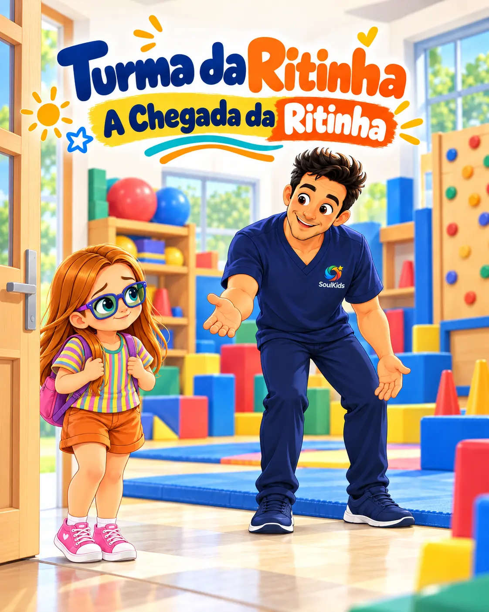

Como a Ritinha está se sentindo?
Observe cada situação, reconheça a emoção da Ritinha e descubra uma estratégia que pode ajudá-la.
Emoções • empatia • autorregulação
Atividade educativa. O resultado não constitui avaliação psicológica ou diagnóstico.
Situação 1 de 10
Como a Ritinha pode estar se sentindo?
Você observou as emoções!
Nem todas as pessoas sentem a mesma coisa na mesma situação. Observar, perguntar e acolher ajuda a compreender melhor o outro.
Este jogo trabalha reconhecimento emocional e não realiza diagnóstico.